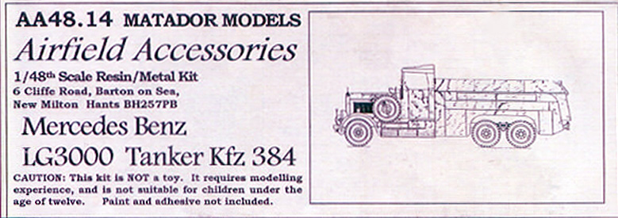

{kind=link}
{kind=link}
{kind=link}
{kind=link}
{kind=link}
{kind=link}
{kind=link}
{kind=link}


Matador Models 1/48 Mercedes LG-3000 Tanker Kfz.384

Kit #AA48.14 MSRP $61.50
Images and text Copyright © 2009 by Matt Swan
Developmental Background
Developed in 1934 the Mercedes Benz LG3000 tanker designated Kfz.384 was the basic refueler for the Luftwaffe. Based on the utility chassis of the LG3000 truck this was a common site at most German airfields until late 1941. After the Battle of Britain this heavy tanker was pretty much relegated to concrete airfields. I imagine it made a pretty interesting target for Allied aircraft and you have to wonder how fast the drivers could run when they had to.
The Kit
I was first attracted to this kit simply by the desire to have a large fuel tanker available for airfield diorama shooting. I had not had much previous experience with Airfield Accessory kits and was slightly intimidated by the price tag. Ultimately my desires overwhelmed my common sense and I purchased this tanker. Once it arrived and I had a chance to inspect the parts I began to regret my decision. The kit is a combination of resin and white metal pieces; the resin is very rough with poor symmetry from left to right side parts. There was a lot of flash that needed trimming, several parts were warped and there were countless small air bubbles to deal with. The white metal parts were no better. The wheels and several accessory details are of white metal. The wheels do not seem to be of consistent size and have heavy mold separation lines in addition to large amounts of flash. Before construction could even begin several hours of parts clean-up was required. The kit instructions consist of a quart sheet sized photo copy with a couple hand drawn exploded views that will need careful study and lots of test fitting of parts.
Construction
After cleaning up and assembling the basic drive train and chassis parts I started work on the tank end of the kit. It did not take long to see that the bottom side of the tank needed some areas blanked off to improve the look from below. I simply cut several pieces of thin plastic sheet and superglued it in place (see images below). Then it was a simple matter of adding the white metal detail piece to the top side of the tank and it was just about ready for paint.
You may click on any of these small images to view larger pictures
Now it’s time to get some paint on this thing. I started by preshading everything with thinned black then shot some gunship gray over top. Once the paint dried I sealed everything with Future then washed with a sludge wash made from Paynes Gray acrylic paste. The tires were done with tire black then painted with some wet ground pastel chalk. Once the chalk had dried I just wiped around the sidewalls with my finger to remove some of the chalk. Rust was applied to the body of the vehicle with a product called Rust-All which appears to be some kind of alcohol based brown wash and goes on real easy. The model was sealed with Micro-Flat from Squadron. Some small details were made from scratch such as the rear warning flags and the rear tank steps. The windshield was made from rectangles of clear sheet cut to fit and attached with clear parts cement.
You may click on these images to view larger pictures
overall this was a turd of a kit, I spent more time cleaning up parts and straightening out warped resin than I did building and painting but at last it is done and can go onto the shelf until needed for my next airfield shoot.